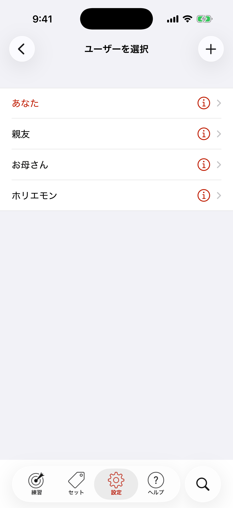

複数のユーザー
iPhoneやiPadを人に貸したことはありませんか？ ほとんどのアプリでは、その人の学習データがあなたのデータと混ざってしまいます。Japanese in a Flash!ではユーザーを何人でも追加でき、ユーザーごとに学習データを分けておけます。

設定タブで使用中のユーザーをタップすると、ユーザーを選択が開きます。名前をタップして確認すると、その人が使用中のユーザーになります。
新しいユーザーは＋ボタンで追加できます。最初からいくつかユーザーを用意してあります！